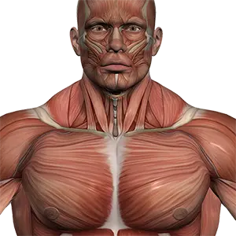

Работа с изображениями
Упражнение 1

Упражнение 2 (некорректный путь)

Упражнение 3 (явные пропорции)

Упражнение 4 (отзывчивые изображения)

Упражнение 5 (иллюстрация с пояснением)
 Рисунок 1 — Глобус как трёхмерная модель Земли
Рисунок 1 — Глобус как трёхмерная модель Земли
Упражнение 6 (форматы)

Упражнение 7 (современные форматы)


← На главную